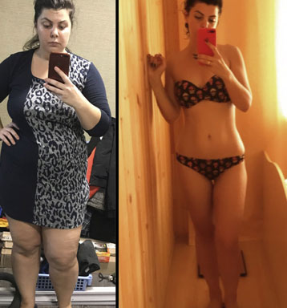

IL MIO PROGRAMMA PERDITA DI PESO -18 kg in 6 settimane
TENTATIVO NUMERO 1
Ho comprato broccoli, sedano, petto di pollo e yogurt bianco. Dato che avevo istruzioni online molto chiare da un nutrizionista, è stato facile per me sviluppare il mio programma di perdita di peso, fare affidamento su un contatore di calorie, distribuire l'assunzione di carboidrati, grassi e proteine ed esercitare quotidianamente. Purtroppo sono stato in grado di resistere solo 5 giorni. Tutte queste restrizioni, fame e succo di sedano, onestamente, non sono per me. A causa della costante sensazione di fame, ero nervosa, ho litigato con la mia famiglia e i miei colleghi. Ho anche avuto un incidente d'auto mentre stavo sognando di una pizza con quattro formaggi ... Così ridicolo.

TENTATIVO NUMERO 2
Ho scritto sul blog del mio pessimo stato di salute e ho subito fatto nuove amicizie. Ragazze giovani di tutto il mondo volevano sostenermi e si sono offerte di partecipare alla maratona dimagrante. Mi hanno subito spiegato che questa non è una maratona normale e che mi piacerà molto.
Non dovevi seguire una dieta rigorosa o fare esercizio fisico per perdere peso. Avevi solo bisogno di prendere regolarmente.

Era difficile credere nell'efficacia di questa maratona e nelle raccomandazioni di altre ragazze. Tuttavia, stata ispirata dai loro risultati e ho accettato. E non me ne sono pentita! La maratona di sei settimane è stata veloce e tranquilla, facile, è stata per la maggior parte un successo! Ragazze, dovreste assolutamente provare questo metodo! Ecco i miei risultati, decidi tu:
INIZIALMENTE
SETTIMANA 1
Settimana trascorsa come al solito. La mattina vado a lavorare, la sera torno a casa. L'unica cosa che è cambiata è che prendo . Non ho ancora risultati visibili, ma ho alcune nuove sensazioni nel mio corpo. Il mio costante desiderio di fare uno spuntino, bere un caffè, mangiare un croissant o una caramella, tutto questo è scomparso. Durante questa prima settimana, non ho mai mangiato troppo, la fame scompare solo dopo metà della mia solita porzione.
Peso, kg: 79.600
Volumi, cm: 110/89/117
SETTIMANA 2
Questo è WOW! Niente corsa, niente sedano, niente broccoli, ma il mio peso sta calando. Sono entusiasta e il morale è in cima! Non ho insonnia e mal di testa, non mi irrito, non ho interruzioni nervosi, ma soprattutto non ho fame costante! Non ho nemmeno pensato che fosse possibile.
Ho perso 4 chili. Al momento, i cambiamenti nella mia figura non sono particolarmente visibili, ma il viso è già notevolmente dimagrito.

Peso, kg: 77.800
Volumi, cm: 108/88/117
SETTIMANA 3
Dire che sono sotto shock significa non dire nulla. In 21 giorni ho perso 5 cm in vita!
Mi sento bene, niente fa male, dormo bene e ho abbastanza forza per tutto. Lavoro con piacere e faccio anche i lavori domestici.

Peso, kg: 74.400
Volumi, cm: 104/84/114
SETTIMANA 4
Metà della maratona è finita. Non ho nemmeno notato come passassero quelle settimane, ma ho notato come il mio corpo è cambiato. Il mio peso in eccesso sta scomparendo a una velocità sorprendente. I vestiti che erano troppo piccoli ora mi stanno perfettamente. Sono felice! :-)
I miei colleghi, le mie amiche e tutti quelli che mi conoscono continuano a farmi i complimenti. Mi infastidisce anche un po ', ma rende anche chiaro che sto andando nella giusta direzione. Preferirei finire la maratona. Non vedo l'ora di vedere quanti chili posso perdere peso.

Peso, kg: 68.200
Volumi, cm: 97/80/107
SETTIMANA 5
"È un miracolo, come fai?" ... Non ho ancora parlato loro di e della mia maratona. Comunque va tutto bene, tranne i problemi con l'armadio. I vecchi vestiti sono troppo grandi per me adesso! Abbiamo un codice di abbigliamento aziendale nel nostro ufficio. L'anno scorso avevo la taglia XL. Ieri ho ordinato un abito di taglia M!

Peso, kg: 65.300
Volumi, cm: 94/78/99
SETTIMANA 6
Mi guardo allo specchio e mi vedo bellissima. Anche se solo un mese e mezzo fa, ho visto un corpo enorme, pieno di grasso. Guardo i miei vecchi vestiti e mi rendo conto di quanto fossi enorme!
Infine, il più interessante: ho perso 18 chilogrammi, 23 cm ai fianchi e 15 cm in vita. D'altra parte, meno di 20 cm intorno al seno, e il seno stesso quasi non perdeva di volume, la dimensione è rimasta la stessa, solo il grasso sulla schiena e le grinze che avevo sopra il reggiseno sono scomparsi. E tutto questo senza fame e sport!
Peso, kg: 62.400
Volumi, cm: 91/74/94
Mi sento una vera star. Tutti quelli che mi conoscono mi hanno inondato di complimenti.
AGGIORNATO:
Ciao bellezze mie! Ricevo centinaia di messaggi ogni giorno. Mi chiedi cos'è e dove acquistarlo. Sto pubblicando la mia risposta qui, perché non posso rispondere a tutti voi.
Quindi, è una polvere per preparare un cocktail energetico e vitaminico. Non contiene ingredienti sintetici e si basa solo su estratti naturali. Pertanto, può essere acquistato senza prescrizione medica. Basta sciogliere in un bicchiere d'acqua e assumerlo mattina e sera prima dei pasti.
Puoi acquistare questo prodotto sul sito ufficiale. In questo modo, puoi essere sicuro di avere un prodotto autentico e non un falso.
Ragazze in sovrappeso, non perdete tempo. Si acquista questo cocktail delizioso e salutare! Grazie in anticipo per il feedback, in attesa di commenti di tutti coloro che perderanno peso con . Non vedo l'ora di sentire i vostri risultati!
Сommenti
Sono molto felice di aver trovato questo blog, mi ha aiutato a credere di nuovo in me stessa e a prendermi cura del mio corpo! Ho già ordinato questo cocktail.
Bravo, risultati fantastici! Prendo questo cocktail da una settimana, mentre ho perso 5 kg!
Dopo l'inverno, peso sempre 5 kg in più. E quest'anno ho guadagnato 10 kg! Mi comprerò questo strumento, altrimenti tutte queste maratone sportive e fame sono solo una presa in giro. Non lo voglio e non inizierò nemmeno!
Ragazze, non è più facile fare la liposuzione una volta per tutte per smettere di soffrire? L'ho fatto l'anno scorso e ne sono molto felice. Certo, è un po 'caro ...
Faccio fatica a credere che si possa perdere peso in un mese senza sport e dieta.
Con l'età, diventa più difficile perdere peso. Non posso mettermi a dieta e voglio sempre i dolci! Così ho deciso di provare questo cocktail vitaminico. Comodo da portare in ufficio. Prima di tutto, riduce l'appetito molto rapidamente. Vedo il risultato, il peso sta gradualmente diminuendo, in un mese e mezzo ho perso 9 kg. Posso mostrare una foto:
Ciao, ieri ho ricevuto il mio pacco. Posso già dire qualche parola: riduce immediatamente la sensazione di fame! Ieri e oggi ho mangiato meno del solito, non volevo mangiare troppo. È così meraviglioso, mi sento leggera e dormo bene. Questo è importante per me, perché dopo altri rimedi ho l'insonnia.
Sto ingrassando molto velocemente. Se mangio pane o dolci, il giorno dopo ho un peso extra. Poi devo fare una settimana di fame per tornare in buona forma. Ma prima era così, ora non mangio troppo. Prendo e la fame scompare immediatamente. Ho un peso stabile di 56 chili e non mi preoccupo più.
La liposuzione è una delle procedure più pericolose. E non è affatto affidabile. La mia amica ce l'ha fatta, e ora deve ripeterla ancora e ancora. Ho ordinato questo cocktail per me e per lei, abbiamo appena iniziato a prenderlo, aspettiamo i risultati.
Sono andata sul sito per leggere la composizione, ci sono solo ingredienti naturali, quindi ho deciso di provarlo. E ora non guarderò più altri mezzi per la perdita di peso: sintetici. Quando ho preso le pillole, il mio stomaco mi faceva molto male. Ora prendo e non ho notato effetti collaterali, ma ho già perso 10 kg.
La mia collega prende sempre questo cocktail dopo dopo pranzo. In effetti, è diventata molto più magra negli ultimi mesi. Molti altri colleghi stanno già seguendo il suo esempio. Tutti stanno perdendo peso, ora penso anche di ordinare per me stessa.
aiuta davvero. Ne ero convinto sei mesi fa. Ora non ci sono problemi con il sovrappeso, e prima pesavo 79 kg! Per coloro che sono stanchi di chili in più e vogliono finalmente perdere peso, non c'è modo migliore per raggiungere un peso normale. Adesso anche i miei ormoni sono in ordine e non ho lamentele dal tratto gastrointestinale.
Grazie per la raccomandazione, ho provato di tutto, ma non sono riuscita a dimagrire. Adesso bevo questo cocktail tutti i giorni e dimagrisco! Ho già perso due taglie e ho perso molto rapidamente i volumi!
Non l'ho mai visto in farmacia. Pertanto, ho ordinato sul sito, bevo già da tre settimane, ho perso 12 kg, l'umore è esplosivo!
Quali farmacie? È scritto che puoi ordinare solo dal sito ufficiale. E se nelle farmacie c'è, significa che una specie di falso. Ho già ricevuto il pacco e ho iniziato a bere. Nella prima settimana sono andati via 3 kg. L'inizio è fatto.
Ragazze, ad esempio, ho seguito una dieta a base di yogurt magro per una settimana. Mi sentivo sempre molto male. Ho iniziato a frequentare il college meno spesso. Adesso bevo questo cocktail, mi sento benissimo, anche i miei studi sono andati in salita. Ho anche perso 9 kg.
Era difficile credere che una persona potesse perdere peso in così poco tempo. E questa polvere è naturale, senza effetti collaterali, questo è un grande vantaggio! L'ho ordinato e ora sono molto felice, già mi metto nei miei vecchi jeans preferiti, perché ho perso 6 kg in una settimana!
Faccio ancora una giornata di digiuno, almeno una volta alla settimana. Personalmente mi aiuta a rimanere in forma, ora peso 53 kg. Sono anche molto soddisfatta di questo cocktail, bevo ogni giorno per due settimane di seguito. E tutte queste diete stupide sono delle assurdità complete, il peso tornerà sempre con un aumento.
Ragazze, che bello essere di nuovo snella! Negli ultimi anni sono diventata così robusta che avevo paura di rialzare la testa per non incontrare lo sguardo dei passanti. Mi sentivo molto insicura tra i miei colleghi. Lavoro in una banca e abbiamo anche un codice di abbigliamento. Tutti indossano la taglia S e solo il mio set è sempre stato cucito separatamente in XL. Dopo un corso di questo cocktail e le passeggiate serali, ho perso 27 chili! Questa è la metà del mio peso precedente, ho rinnovato tutto il mio guardaroba! Consiglio vivamente !
